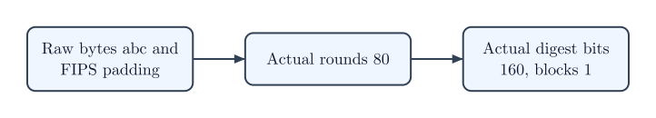
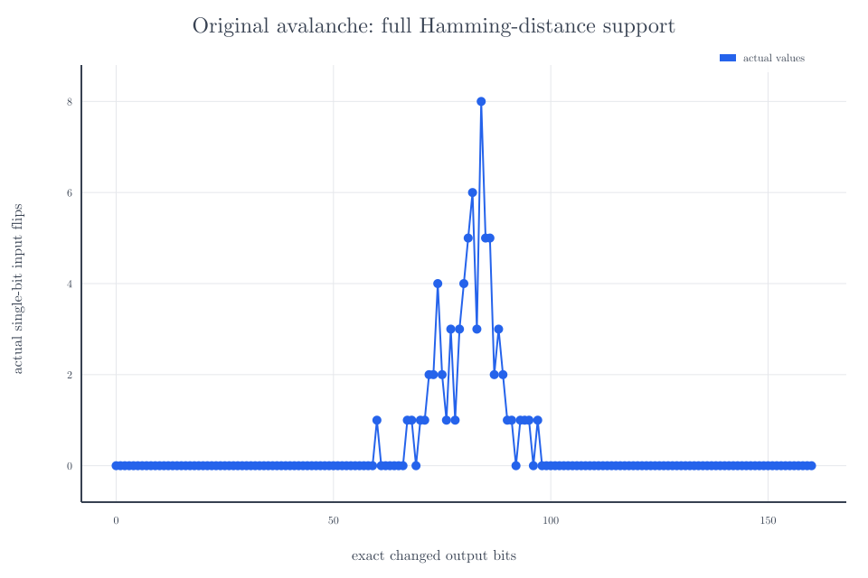
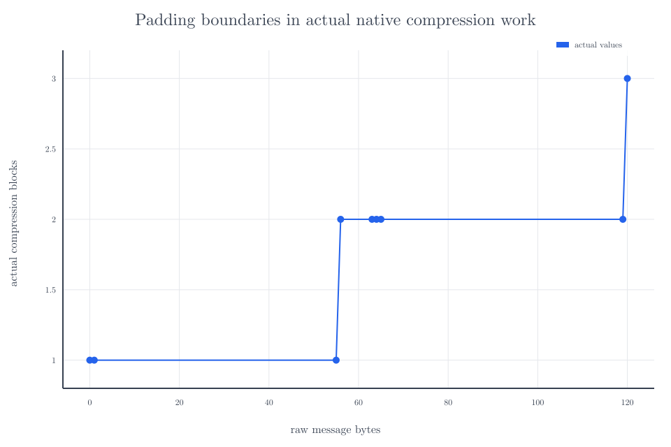
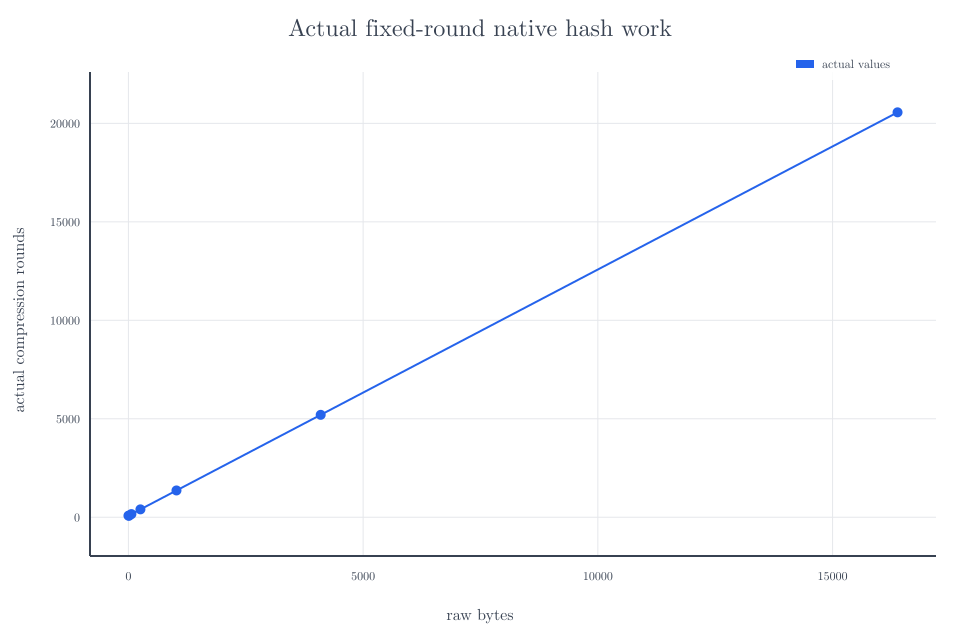

SHA-1: actual schedules, compression rounds and complete avalanche counts
Abstract
Hash complete raw byte messages into a 160-bit digest. Native padded-block and round histories connect the FIPS construction to its reference vectors before the original avalanche message experiment.
Mechanism and mathematical scope
Append one high bit, zero bits until the byte length is56 modulo64, then the original64-bit big-endian bit length. Load sixteen big-endian words, expand the schedule and update the working32-bit state modulo2^32; add the original chaining words after every block. The report shows actual scheduled words, working states and feed-forward from this producing execution. Padding can add a second block when the original length crosses56 modulo64. Avalanche flips each original input bit independently and counts actual changed digest bits; a mean near half the digest width is a diagnostic, not evidence of attack resistance.
A tiny actual producing history
The table and native concept diagram read the same producing execution. Every block below is a complete editable C++ program.
#include <dm/dm.hpp>
int main() {
namespace a = dm::algorithms;
namespace g = dm::graphics;
std::filesystem::create_directories("build");
auto r = a::sha1_trace("abc");
const auto &b = r.blocks[0];
std::print("Actual padded bytes {}, incoming chaining words `{}`, outgoing `{}`.\n\n| actual round | " "actual schedule word | actual state after |\n| ---: | ---: | --- |\n",
r.padded_bytes, b.before, b.after);
for (std::size_t i = 0; i < 4; ++i) {
const auto &s = b.rounds[i];
std::print("| {} | {} | `{}` |\n", s.index, s.word, s.after);
}
g::Diagram concept_diagram(48, 1100);
concept_diagram.node("n0", {0, 0}, "Raw bytes abc and FIPS padding");
concept_diagram.node("n1", {5, 0}, std::format("Actual rounds {}", r.rounds));
concept_diagram.node("n2", {10, 0},
std::format("Actual digest bits 160, blocks {}",
r.compression_blocks));
concept_diagram.edge("n0", "n1").edge("n1", "n2");
concept_diagram.save_svg("build/sha1_tiny.svg");
}Actual padded bytes 64, incoming chaining words [1732584193, 4023233417, 2562383102, 271733878, 3285377520], outgoing [2845392438, 1191608682, 3124634993, 2018558572, 2630932637].
| actual round | actual schedule word | actual state after |
|---|---|---|
| 0 | 1633837952 | [18283571, 1732584193, 2079550178, 2562383102, 271733878] |
| 1 | 0 | [2307937133, 18283571, 1506887872, 2079550178, 2562383102] |
| 2 | 0 | [2704871176, 2307937133, 3225796364, 1506887872, 2079550178] |
| 3 | 0 | [3453542683, 2704871176, 1650726107, 3225796364, 1506887872] |

The retained original experiment
#include <dm/dm.hpp>
int main() {
namespace a = dm::algorithms;
namespace g = dm::graphics;
std::filesystem::create_directories("build");
std::print("| original reference message | actual lowercase digest |\n| --- | --- |\n");
for (const auto &m : std::vector<std::string>{"", "abc",
"abcdbcdecdefdefgefghfghighijhijkijkljklmklmnlmnomnopnopq"})
std::print("| {} | {} |\n", m.empty() ? "(empty)" : m, a::sha1_hex(m));
auto r = a::sha1_avalanche("avalanche");
std::vector<double> x, y;
std::print("\nOriginal avalanche: actual mean {} changed bits out of 160, calls {}, compression blocks " "{}.\n\n| exact changed digest bits | actual input flips |\n| ---: | ---: |\n",
r.mean, r.hash_calls, r.compression_blocks);
for (std::size_t i = 0; i < r.histogram.size(); ++i) {
std::print("| {} | {} |\n", i, r.histogram[i]);
x.push_back(i);
y.push_back(r.histogram[i]);
}
auto plot = g::RPlot::create();
plot.lines(x, y, "actual values", {37, 99, 235}).points(x, y, {37, 99, 235},
5).title(
"Original avalanche: full Hamming-distance support").x_label(
"exact changed output bits").y_label("actual single-bit input flips");
plot.save_svg("build/sha1_original.svg");
}| original reference message | actual lowercase digest |
|---|---|
| (empty) | da39a3ee5e6b4b0d3255bfef95601890afd80709 |
| abc | a9993e364706816aba3e25717850c26c9cd0d89d |
| abcdbcdecdefdefgefghfghighijhijkijkljklmklmnlmnomnopnopq | 84983e441c3bd26ebaae4aa1f95129e5e54670f1 |
Original avalanche: actual mean 81.43055555555556 changed bits out of 160, calls 73, compression blocks 73.
| exact changed digest bits | actual input flips |
|---|---|
| 0 | 0 |
| 1 | 0 |
| 2 | 0 |
| 3 | 0 |
| 4 | 0 |
| 5 | 0 |
| 6 | 0 |
| 7 | 0 |
| 8 | 0 |
| 9 | 0 |
| 10 | 0 |
| 11 | 0 |
| 12 | 0 |
| 13 | 0 |
| 14 | 0 |
| 15 | 0 |
| 16 | 0 |
| 17 | 0 |
| 18 | 0 |
| 19 | 0 |
| 20 | 0 |
| 21 | 0 |
| 22 | 0 |
| 23 | 0 |
| 24 | 0 |
| 25 | 0 |
| 26 | 0 |
| 27 | 0 |
| 28 | 0 |
| 29 | 0 |
| 30 | 0 |
| 31 | 0 |
| 32 | 0 |
| 33 | 0 |
| 34 | 0 |
| 35 | 0 |
| 36 | 0 |
| 37 | 0 |
| 38 | 0 |
| 39 | 0 |
| 40 | 0 |
| 41 | 0 |
| 42 | 0 |
| 43 | 0 |
| 44 | 0 |
| 45 | 0 |
| 46 | 0 |
| 47 | 0 |
| 48 | 0 |
| 49 | 0 |
| 50 | 0 |
| 51 | 0 |
| 52 | 0 |
| 53 | 0 |
| 54 | 0 |
| 55 | 0 |
| 56 | 0 |
| 57 | 0 |
| 58 | 0 |
| 59 | 0 |
| 60 | 1 |
| 61 | 0 |
| 62 | 0 |
| 63 | 0 |
| 64 | 0 |
| 65 | 0 |
| 66 | 0 |
| 67 | 1 |
| 68 | 1 |
| 69 | 0 |
| 70 | 1 |
| 71 | 1 |
| 72 | 2 |
| 73 | 2 |
| 74 | 4 |
| 75 | 2 |
| 76 | 1 |
| 77 | 3 |
| 78 | 1 |
| 79 | 3 |
| 80 | 4 |
| 81 | 5 |
| 82 | 6 |
| 83 | 3 |
| 84 | 8 |
| 85 | 5 |
| 86 | 5 |
| 87 | 2 |
| 88 | 3 |
| 89 | 2 |
| 90 | 1 |
| 91 | 1 |
| 92 | 0 |
| 93 | 1 |
| 94 | 1 |
| 95 | 1 |
| 96 | 0 |
| 97 | 1 |
| 98 | 0 |
| 99 | 0 |
| 100 | 0 |
| 101 | 0 |
| 102 | 0 |
| 103 | 0 |
| 104 | 0 |
| 105 | 0 |
| 106 | 0 |
| 107 | 0 |
| 108 | 0 |
| 109 | 0 |
| 110 | 0 |
| 111 | 0 |
| 112 | 0 |
| 113 | 0 |
| 114 | 0 |
| 115 | 0 |
| 116 | 0 |
| 117 | 0 |
| 118 | 0 |
| 119 | 0 |
| 120 | 0 |
| 121 | 0 |
| 122 | 0 |
| 123 | 0 |
| 124 | 0 |
| 125 | 0 |
| 126 | 0 |
| 127 | 0 |
| 128 | 0 |
| 129 | 0 |
| 130 | 0 |
| 131 | 0 |
| 132 | 0 |
| 133 | 0 |
| 134 | 0 |
| 135 | 0 |
| 136 | 0 |
| 137 | 0 |
| 138 | 0 |
| 139 | 0 |
| 140 | 0 |
| 141 | 0 |
| 142 | 0 |
| 143 | 0 |
| 144 | 0 |
| 145 | 0 |
| 146 | 0 |
| 147 | 0 |
| 148 | 0 |
| 149 | 0 |
| 150 | 0 |
| 151 | 0 |
| 152 | 0 |
| 153 | 0 |
| 154 | 0 |
| 155 | 0 |
| 156 | 0 |
| 157 | 0 |
| 158 | 0 |
| 159 | 0 |
| 160 | 0 |

Explicit controls
#include <dm/dm.hpp>
int main() {
namespace a = dm::algorithms;
namespace g = dm::graphics;
std::filesystem::create_directories("build");
std::vector<double> x, y;
std::print("| original raw bytes | actual padded bytes | actual blocks | actual rounds |\n| ---: | ---: " "| ---: | ---: |\n");
for (std::size_t n : {0, 1, 55, 56, 63, 64, 65, 119, 120}) {
auto r = a::sha1_run(std::string(n, char{0}));
std::print("| {} | {} | {} | {} |\n", n, r.padded_bytes,
r.compression_blocks, r.rounds);
x.push_back(n);
y.push_back(r.compression_blocks);
}
bool cap = false;
try {
a::SHAOptions o;
o.max_trace_entries = 1;
a::sha1_trace("abc", o);
} catch (const std::length_error &) {
cap = true;
}
std::print("Complete trace admission rejected {}.\n", cap);
if (!cap)
return 1;
auto plot = g::RPlot::create();
plot.lines(x, y, "actual values", {37, 99, 235}).points(x, y, {37, 99, 235},
5).title(
"Padding boundaries in actual native compression work").x_label(
"raw message bytes").y_label("actual compression blocks");
plot.save_svg("build/sha1_controls.svg");
}| original raw bytes | actual padded bytes | actual blocks | actual rounds |
|---|---|---|---|
| 0 | 64 | 1 | 80 |
| 1 | 64 | 1 | 80 |
| 55 | 64 | 1 | 80 |
| 56 | 128 | 2 | 160 |
| 63 | 128 | 2 | 160 |
| 64 | 128 | 2 | 160 |
| 65 | 128 | 2 | 160 |
| 119 | 128 | 2 | 160 |
| 120 | 192 | 3 | 240 |
Complete trace admission rejected true.

Actual selected work and sensitivity
#include <dm/dm.hpp>
int main() {
namespace a = dm::algorithms;
namespace g = dm::graphics;
std::filesystem::create_directories("build");
std::vector<double> x, y;
std::print("| message bytes | actual blocks | actual schedule expansions | actual rounds |\n| ---: | " "---: | ---: | ---: |\n");
for (std::size_t n : {1, 16, 64, 256, 1024, 4096, 16384}) {
auto r = a::sha1_run(std::string(n, 'a'));
std::print("| {} | {} | {} | {} |\n", n, r.compression_blocks,
r.schedule_expansions, r.rounds);
x.push_back(n);
y.push_back(r.rounds);
}
auto plot = g::RPlot::create();
plot.lines(x, y, "actual values", {37, 99, 235}).points(x, y, {37, 99, 235},
5).title(
"Actual fixed-round native hash work").x_label("raw bytes").y_label(
"actual compression rounds");
plot.save_svg("build/sha1_work.svg");
}| message bytes | actual blocks | actual schedule expansions | actual rounds |
|---|---|---|---|
| 1 | 1 | 64 | 80 |
| 16 | 1 | 64 | 80 |
| 64 | 2 | 128 | 160 |
| 256 | 5 | 320 | 400 |
| 1024 | 17 | 1088 | 1360 |
| 4096 | 65 | 4160 | 5200 |
| 16384 | 257 | 16448 | 20560 |

API and interpretation
SHA-1 is a historical algorithm with known practical collisions; these conformance and sensitivity examples do not restore collision resistance. Raw bytes include NUL/high bytes. Complete FIPS length, padded geometry and optional capture bounds are checked before hashing. The histogram retains every distance from zero through the full digest width, so tail values are never relabelled into clipped bins.
Reusable producers, fixtures and histories live in the canonical C++ library. Captured records own their values and do not come from a separate report replay. Selected counters and record/scalar policies are specified at their API boundaries; they are not peak-byte or wall-time budgets. Synthetic structural inputs are controlled fixtures for these mechanisms.
References
Verification: 126 scoped native cases;21 directly instrumented ASan/UBSan
cases;124 executable public examples;492/492 full-file definitions and10 exact
Sfc64 members;10 hovers;1588 independent records/14377 checks;frozen comparisons
across all ten families with endpoint/full-width field corrections recorded;17
checkout/installed standalone headers and linked/umbrella consumers;40 executed
programs and40 inspected figures with both exports. The complete
original4000-step native tensor SOM trajectory agrees with an independent NumPy
replay, including every winner and final assignment. Receipts:
build/mepml-conversion/batch-344-353/.